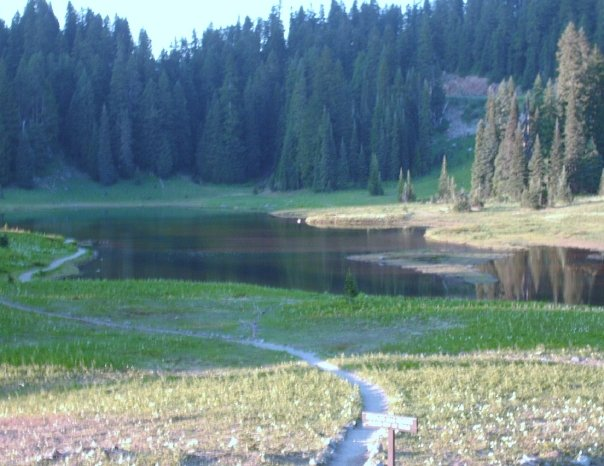
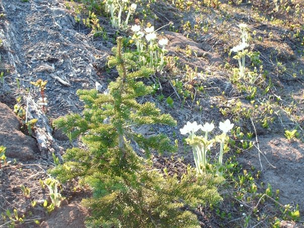
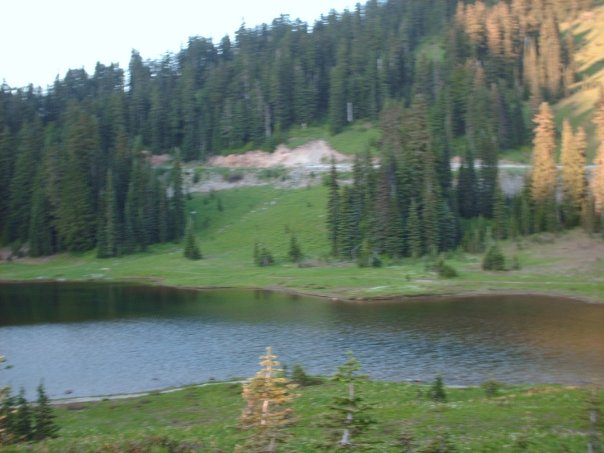
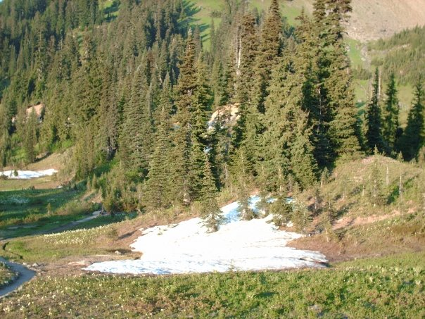

This is Mount Rainier as my friend and I were approaching it from a distance. My friend was driving. I thought the scene was really pretty so she pulled over and let me take the shot.

This is one of the mountain meadows. There are narrow paths throughout the meadow. Because the park gets so many visitors the park people want you to stay on the paths so as not to damage the plants and grasses.

The flowers and some of the pine trees are really small. I'd never seen such small, naturally occurring trees. I had to get close-ups of them.

I can't remember if this is a lake or stream but I thought this make another nice shot.

At certain elevations Mount Rainer has snow all year round. It was August when I took my trip.